Filling the Cooling Module (Dual and Single Fan)
Scope
This procedure should be performed during installation, preventative maintenance or service call.
This procedure is for filling a totally empty system which will hold 1200 mL of fluid. If filling from a partially full reservoir, use only the amount needed to fill the reservoir. The reservoir holds 1000 mL. For example, if the reservoir is half full only 500 mL will be needed.
The procedure varies slightly for each model of cooling module. Follow the applicable procedure.
Parts and Materials Required
- Proper PPE
- Absorbent pads
- Cooling Module Drain/Fill Tube Kit [903043]
- DI water
- 2-liter container
Time Required
- 15 minutes
Procedure (Dual Fan Model, Black Foam)
This procedure applies to the newer, dual fan model with black insulating foam.
- Put on proper PPE.
- Open the right-side panel of the system.

Wear clean nitrile gloves while performing the following procedures.  Disconnect the fluid line fitting from the output of the cooling module. It is the fitting with the short tube, nearest the rear of the system. This is the fluid line that connects the output of the reservoir to the circulating pump via the short piece of insulated tubing. Push the fitting in and twist counter clockwise to disconnect.
Disconnect the fluid line fitting from the output of the cooling module. It is the fitting with the short tube, nearest the rear of the system. This is the fluid line that connects the output of the reservoir to the circulating pump via the short piece of insulated tubing. Push the fitting in and twist counter clockwise to disconnect.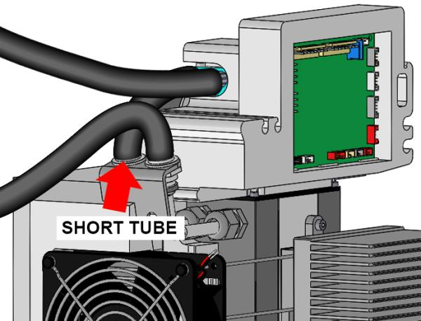
- Connect the fill/drain tubes from the Fill Tube Kit to both the reservoir output fitting (the short tube, now disconnected) and the circulating pump supply line fitting (the now empty fitting towards the rear). Push fittings in and twist clockwise to connect. Make sure fittings are fully connected.
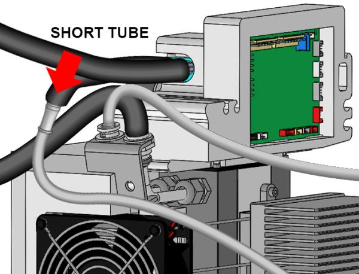
- Pour 1200 mL of distilled water (or an appropriate amount to fill a partially full system) into a 2-liter container.
- Place the 2-liter container on an absorbent pad on the floor next to the cooling module and insert both fill/drain tubing lines into the bottle. Position the tubing so both ends of the tubes are at the bottom of the container.
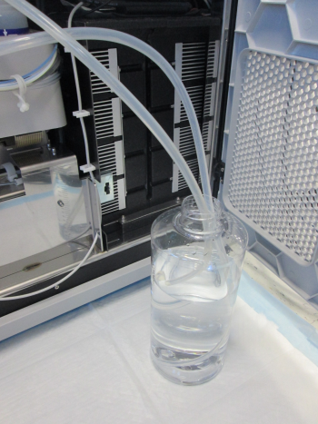
- Start Service Software and click the 4. Liquid Vacuum Cooling System tab.
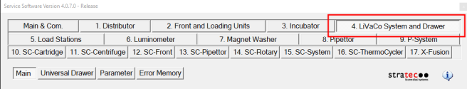
- Select Liquid, Vacuum, Cooling System from the dropdown and click Initialize.
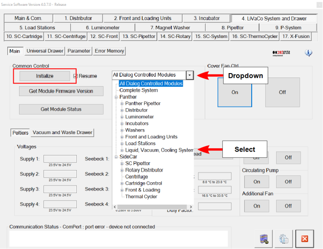
- Turn on the Cooling Circulating Pump. The cooling fluid pumps into the cooling system from the cooling fluid container. Ensure the 2 tubes remain positioned on the bottom of the bottle.
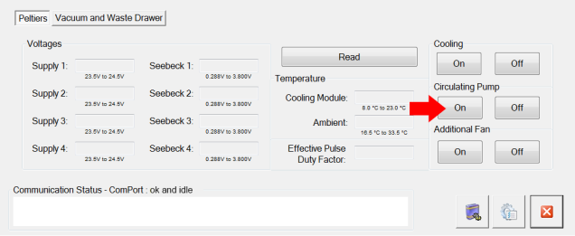
- Closely monitor the fill level of the reservoir by visually observing the sight tube of the reservoir. Turn off the circulating pump using service software when the reservoir is full (observe the sight tube) or the cooling fluid container is empty, whichever occurs first. The cooling system when full will contain approximately 1200 mL of cooling fluid.

Warning—Do not overfill the reservoir. Fluid can leak from the top of the reservoir if the reservoir is overfilled. 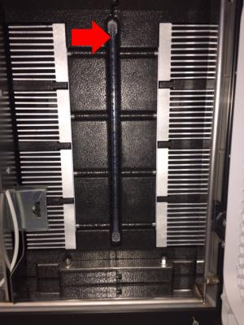
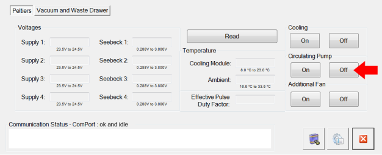
- Disconnect and remove both fill/drain tubes. Push the fittings in and twist counter clockwise to disconnect.
- Reconnect the pump supply line fitting (short tube) to the reservoir output fitting. Push the fitting in and twist clockwise to connect. Make sure the fitting is fully connected.
Verification
- Select the Cooling system On button (turns on Peltiers) and the Circulating Pump On button to start the system.
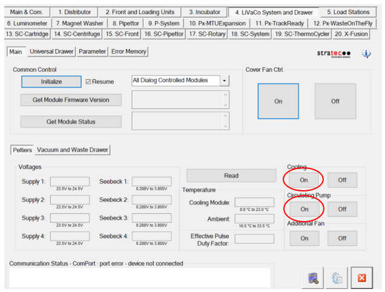
- Make sure the Reagent and Sample Bays reach their specified temperatures.
- Visually verify that there are no leaks from the Cooling Module or any of the fluid connections.
- If this is an install, continue to Configure the Reagent and Sample Bay Barcode Scanners.
Procedure (Single Fan Model, Orange Foam)
This procedure applies to the older, single fan model with orange insulating foam.
- Put on proper PPE.
- Open the right side panel of the system.
Wear clean nitrile gloves while performing the following procedures. - Disconnect the fluid line fitting from the output of the cooling module. It is the fitting with the short tube, nearest the front of the system. This is the fluid line that connects the output of the reservoir to the circulating pump via the short piece of insulated tubing. Push the fitting in and twist counter clockwise to disconnect.
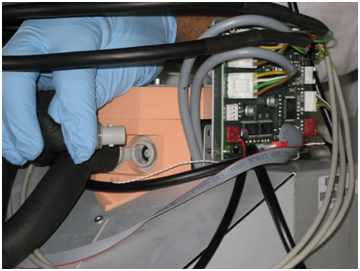
- Connect the fill/drain tubes from the Fill Tube Kit to both the reservoir output fitting (the short tube, now disconnected) and the circulating pump supply line fitting (the now empty fitting towards the front). Push fittings in and twist clockwise to connect. Make sure fittings are fully connected.
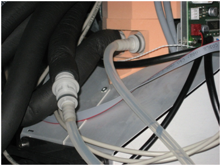
- Pour 1200 mL of distilled water (or an appropriate amount to fill a partially full system) into a 2-liter container.
- Place the 2-liter container on an absorbent pad on the floor next to the cooling module and insert both fill/drain tubing lines into the bottle. Position the tubing so both ends of the tubes are at the bottom of the container.
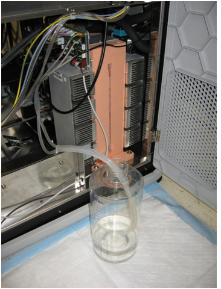
- Start up Service Software and navigate to 4. Liquid Vacuum Cooling System tab.
- Select Liquid, Vacuum, Cooling System from the dropdown and select Initialize.
- Turn on the Cooling Circulating Pump. This will pump the cooling fluid into the cooling system from the cooling fluid container. Ensure the 2 tubes remain positioned on the bottom of the bottle.
- Closely monitor the fill level of the reservoir by visually observing the sight tube of the reservoir. Turn off the circulating pump using service software when the reservoir is full (observe the sight tube) or the cooling fluid container is empty, whichever occurs first. The cooling system when full will contain approximately 1200 mL of cooling fluid.
Warning—Do not overfill the reservoir. Fluid can leak from the top of the reservoir if the reservoir is overfilled. 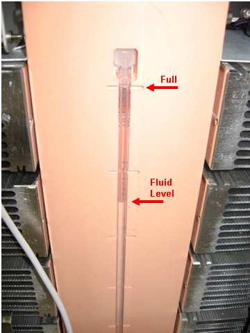
- Disconnect and remove the fill/drain tubing from the reservoir output and pump supply line fittings. Push the fitting in and twist counter clockwise to disconnect.
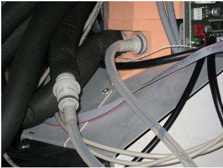
- Reconnect the pump supply line fitting to the reservoir output fitting. Push the fitting in and twist clockwise to connect. Make sure the fitting is fully connected.
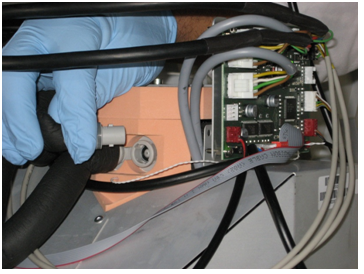
Verification
- Select the Cooling system button (turns on Peltiers) and the Circulating Pump button to start the system.
- Make sure the Reagent and Sample Bays reach their specified temperatures.
- Visually verify that there are no leaks from the Cooling Module or any of the fluid connections.
 button at the top of the page to send feedback, comments, or change requests.
button at the top of the page to send feedback, comments, or change requests.